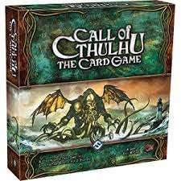
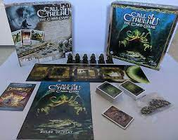
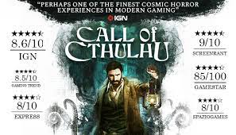
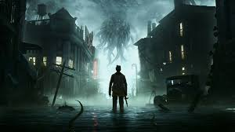
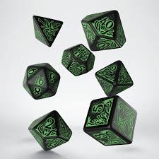

Name:Suzhi Li
Student number:s3789222
My name is Suzhi Li and my English name is Sushi. It is a funny story of why I have this name but it is a bit long so if you are interested in it, you can go to my website. I come from China. For me, my hobbies are quite wide, I like playing video games, doing exercise, reading, even trying to write some stories and watching anime. At first, I wanted to apply Game Design but because of some surprise situations, I chose to study Information Technology at the end. However to be a game designer still is my goal and I will keep pursuing it in the future.
Name: Tao Zeng
Student number: s3654295
I come from China. I can speak Mandarin, English, Cantonese. This is the second years at RMIT.I don't have many hobbies, I only love skiing. In my country, skiing is not very popular. But I believe it will attract more and more people’s attention. I also hope to meet more people with the same hobbies.
Name: Zhenyu Huang
Student number: s3819233
My name is Zhenyu Hunag and my English name is paul.
I am from China. I can speak Mandarin, Cantonese and English. This is my first year at RMIT. I feel excited for my university life. I am interested in many things like video games, gyms or any outside activities. What I am trying now is to make myself more confident to speak english and meet new friends.
Name: Hongwei Zheng
Student number: s3636417
I was born in Amoy, China. A city which is very close to Taiwan. Therefore I can speak both Mandarin and Taiwanese. Like other teenagers I am addicted to video games, it is the part of the reason that I choose IT as my major in University. I am a team player and always like to make new friends online all over the world so I prefer muti-player games. I am also a fan of cycling, it is a convenient transport for my hometown because Amoy is a small Island.
Name:Haowen Wang
Student number:s3819216
I am from China, Chinese is my first language and this is my first year at rmit. My hobbies are swimming and computer games. Although I have not returned to Australia yet I still hope to make some friends through online classes, I think it will help me a lot in my future studies.
Name:Hao Zhong
My Chinese name is Hao Zhong and English name is Howard. I come from China. This is my first year studying Bachelor of Information Technology in RMIT. My hobbies are playing games, watching movies and playing guitar.
Our team performed very well in Assignment 2. There was no quarrel or complaint among other team members. Everyone finished their work. Everyone has a clear division of labor, and works actively and efficiently. When members have any problems, they are willing to help others. In Assignment 3, our team will continue to maintain the current state, and our team will understand each person's strengths and weaknesses when assigning tasks. I believe that we will accomplish the task excellently
We all intend to work in the IT sector in the future, but for our purposes there may be different positions in the future. Many people in our team are willing to be programmers because they are very interested in the IT industry. Most of us plan to work after graduation, while some of us want to find part-time jobs related to information technology during the semester. Most occupations require at least one programming language, such as Java or python, and relevant work experience. Therefore, each of us should learn at least one programming language, and then master more experience in school
Group github:
https://github.com/HaowenWang1/desktop-tutorial/tree/mainWebsite links:
https://haowenwang1.github.io/desktop-tutorial/Intro-to-it-assignment3/Assignment3.htmlGroup Microsoft Team
Google Drive
Our project is a video game with the style of Call Of Cthulhu and its playing style will follow the Call Of Cthulhu board game but have changed. This game will focus on plot and expedition. It will not attract users by exciting action but by the stange, mysterious atmosphere and attractive stories. The players will control the character which is created by themselves to solve different mysteries one by one and find the true or impressive story which hides behind these events. When our players play our games, they will feel like they are reading a fiction and they are the main characters in it. Moreover, after the game is successful, we will introduce another function which works like the Map Editor like Starcraft 2 and allow our users to create their own story and share with others.
|  |  | COC in a board game. |
Firstly, following the development of technology, a good material life is no longer the final goal for many people anymore. At this time, more and more people are trying to enrich their spiritual life and video games have become popular and the best choice for these people. In video games, people can experience different lives and feel the stimulation with a little price. Thus, working in video games will have many opportunities and chances to be successful. Secondly, Call Of Cthulhu is a popular pop culture, many famous games and even movies use it for reference. However, the games and movies which have exactly COC to be their main topic are less and do not correctly show the main idea of COC which is indescribable fear and big inclusiveness and freedom for different fan fiction. Thus, we want to create the games to remedy the vacancy and complete the circle.
|   | The games which have the main idea of Call of Cthulhu but based on players’ response, they just introduced COC but does not have enough COC elements like freedom and comprehensiveness. |
There are many reasons why we want to work on this project. Firstly, the popularity of video games is undoubted. When one of our group members, Suzhi , was a foundation student, he and his partner did a research of the sales volume of games in 2019, the most three popular games having a total sales volume of 400 millions salling. Game business is a huge opportunity. Secondly, Call of Cthulhu is a popular culture too, there are many famous games used for reference in this culture like WOW, Blood Cure and The Elder Scrolls eth. Third, the project has some interaction elements like different human actions cause different technology reaction.These elements can be used in not only game parts but also in other IT technology like robots or autonomous vehicles. It can help us extend more work in wider situations.
The first aim of the project is to transplant the series of games,Call Of Cthulhu, from board game to computer game. It will be a RPG game but the rules will mainly be based on the COC board game with some rational change. For the final aim, there will be not only ‘our story’ in the project. To further development, the project will be a game society on the Internet to let users create their own stories, share their fan fiction, communicate with others, make new friends and learn more about designing computer games. To achieve the aim, we setted some goals:
The first step is to create the sample game to verify the feasibility of the transplant, to know the popularity of the users who are first time known for COC and the acceptability of COC fans for the transplant. So, for the first step, there should be some goals need to reach:
Unlike most games, COC style RPG games do not need to have tension and irritative fighting (but can have). These games focus more on telling the story, character shaping and creating an atmosphere. Thus, in building character AI, we need to make them react like real people, we need to build many possible results based on possible users actions and even upload reflectively.
Transplanting games from a platform to another is already difficult, for our project to transplant from board to computer will be more difficult. When users play these games on board and they want to do some action or even be forced to do verification, they will throw some dice to see if they are successful or not. This time, they will not feel unreasonable or have no sense of substitution because they know they only can do these on the board. However, when they are transplanted to a computer, this playing way will reduce its immersion. But if we make too many changes, it may annoy the COC fans. Thus, we need to design rational functions and find the balance between them.
The second step will be to create a server to save the data, this data will be the information for maps and the information for users characters which they not only want to save in their computer but also want to backup in the server. Because COC board games can be described to a fans circle, the Keepers (the compere of a COC board game) who have much experience like to create their own story and play with others. I want to keep it that way. For this project, it will have the main story which we create in the first step and also have some situations for other game developers to create their own story and let people play like the Game Lobby in StarCraft 2. These servers will be used to store these maps. The other function for the server will be to save users’ character data. In COC games, players need to create their own character to play the games and they can use these characters for the next game if they survive. So, there should be some place to let the users save and manage the data.
COC games are focusing on cooperation. When we create the games, we need to keep this feature too. Thus, how to collect users together will be an important part for us. In our plan, we want to adopt the ‘weak online cooperation mechanism’, this mechanism like Monster Hunter World, the users can play out online by themselves and also can make their own computer to be a server and invite their friends to join their server. It will reduce the burden for our server.
Like we said before, COC board games can be described to a fans circle, people can create their own story based on Call Of Cthulhu mythology system and the official rules. We want to follow the way. However, different to the traditional way of creating, creating stories in computer games is much more difficult than on board. When they make their own module on board games, the only skill which they need is just typing but on the computer, they will need more skill like programming and 3D or 2D model build. Thus, we need to create a function to help them complete their most difficult part or teach them the needed skill like the Map Editor in StarCraft 2.
The first step to complete the project will be to create the basic rules and playing ways. Just like StarCraft 2 and other famous games which have game lobby or support different modules. They allow users to create different playing ways and stories but they also need to make sure users do not create ‘another type of game’. Thus, at the beginning, we will create the plot mode to make a regulation of the main playing ways, operating mode, rule and style.
For our project, we need to deal with two different parts of potential users: the users group who do not contact COC board games and the user group who are fans of COC board games so we must find the balance of these two groups’ need, we not only cannot make the rule too difficult for understanding for the new people but also need to make the COC fans feel familiar with the original rule. Thus, the plot mode will be splitted into different parts too and step by step to let the users understand the rule.
For the first part, it will be a linear process story. It will be a demo of the game. In this story, it will follow the COC style but be short, have cleaning clues and a small map. The options for users to build their character will be limited too.
This story will be a mystrious murder case. The users can choose to work with their friends or just enjoy the story by themselves. In this story, the players can only choose three professions and the values of ‘strength’, ‘constitution’, ‘size’, ‘dexterity’, ‘appearance’, ‘inspiration’, ‘power’ and ‘education’ will be specified. Moreover, the ‘Sanity System’ will not run this time too. The three professions will be: a detective, the friend of the victim or a police officer who comes to inquire about the case.
For different characters, they will have extra skill points to complete their character. This time, the skill points will be specified too and the skills which they can change to build their character will be less too. Based on the skill using frequency at COC board games, the skills like ‘search’, ‘persuade’, ‘menace’, ‘punch’, ‘dodge’, ‘library’(based on the Call of Cthulhu rule, it means searching books), ‘shooting’ will be enough. The users’ skill point will not be enough to let them handle all skills thus cooperating with their friends will be important.
These abilities are transplanted from the COC board game but for the immersion of the game, they cannot be the same as in the board. In the board, the users need to roll a dice to design whether their ability is successful or not but when it is moved into computers, they must have changed.
|  | The dice used in the COC board game. |
For example, the communication skills like ‘persuade’ and ‘menace’ will be used during the players' talk to NPC for getting the clues. So, about how to use these skills, we reference the famous RPG game, ‘The Witcher Wild Hunt’. In this game , when you control the main character to communicate with other NPC, you can choose different options to design what you want to say and the NPC will base on your chose to do different respond, moreover, sometimes there will have different options or hide some options because of you may did something at before. We want to use this communication method.
In our game, when users want to communicate with others, there will be some sentences for users to choose and different sentences will cause different results of the communication, it will affect how much clues they can get and how the NPC feels of the character. In order to show differences with other games and the specific style of COC game. In this part, More familiar ‘persuade’, more sentences can be chosen. Moreover, when the users feel there should be some sentence but it does not show, the player will have a chance to roll a two 10 faces dice which one representative decade and one representative the unit like the COC board game and to judge success or not will be as same as in the board, when the dice number less than users’ familiar if the skill, the system will show some useful sentence to let they choose. Of course, it will have some risk and opportunity, base on COC rule, if your dice show 1,2 or 3 it mean you roll a big success, you will get extra award but if your dice show 98,99 or 100, it mean you roll a big failure, you will get extra punishment. We will keep the mechanism in our game. When players have big success, they will get extra important clues but if they have big failure, they will make the NPC angry and cannot get any clue from the NPC anymore.
Another important part for the game will be the ‘finding’ part and using the skill of ‘search’. It should not as same as in the board too and in order to make the function press close to real life, there will be a ‘search button’, when they player feel some place may have clues, they can use the ‘search button’, it will be a gradually growing light halo and when the light halo tauch the important clues, the clues will flash and the players can pick the correct clue. In this part, the familiarity of the skill will decide the radius of the light halo, the showing time of the clue and the reuse time of the skill.
Although COC style games focus more on exploration and telling a story, it does not mean that there will not be any fighting in this game. Thus, we also need to design the fighting part in our games too. In this part, the main skill for the user will be ‘shooting’, ‘punching’ and ‘dogeging’. For the ‘shooting’ part, the familiar for the skill will affect the degree of shaking hands when the character aims his target and reloads ammo time. In the ‘punching’ part, familiar will affect their speed of a punching and the time for next punching and in ‘dogeging’ part, it will affect the hand feeling and invincible frame.
To distinguish each profession, COC has its own standard and we will keep the standard and show them in our first game. Based on COC’s standard, every job will have their ‘The balor skills’, like detective’s balor skills will be ‘search’, ‘persuade’ and ‘dodge’,for police, balor skills will be ‘shoot’, ‘dodge’ and ‘punch’. Because this project is the demo, the friend of the victim will have no balor. For these skills, players can enhance them to 80 proficiency (the main of proficiency is 100 but based on COC rules, humans cannot have this proficiency) and for other skills, it will be the ‘interest skills’ for the jobs and the players only can enhance them to 60.
Moreover, they will have different specific advantages and disadvantages in this story. For detectives, like the detectives are strangers in the residential building so the residents may feel uncomfortable helping him. The sentences which are in the communication part will be less and they should try to get trust from the NPC first then the sentences show themselves or they can just try to roll a dice and see how lucky they are. Of course, they can choose to use ‘menace’ or ‘punching’ for clues but the result will be no one wanting to talk to the detectives anymore.For the friends of the victim, like we said before, they do not have balor skills in this time so they only can enhance some skills to 60 proficiency. However, in this situation, they are familiar with the people who live in the building, so they will have all sentences shown during the communication part even if someone may directly tell them useful clues.For the police, they will correctly follow the rule.
During the play part, the player can choose to play with friends or play by themselves. They need to find clues by asking people and use a ‘searching button’ to search each room. They will use the clue to know what happened in the building.There will be a clock to record the time in the game. The players need to distribute the time rationally, they need to find the truth before the time ends or face the worst ending because of running out of time.
In the end, the players will find the truth: like the traditional Cthulhu story, someone tries to summon one of the Great Old Ones but fails and becomes a Crawling Ones (one of a COC monster, based on the COC rule, the player will not know the name). Then the players need to make the decision: escape or fight with the monster to save everyone and their decision will create different ends. Based on their choice and their ability, they will cause different endings and design different destiny for they and other NPCs.The They may escape and tell the police officer to clean the building, but the neighborhood is not lucky like them.They successfully persuade everyone,player and every NPC successfully escape from the building or they just defend the monsters and everyone live.
This first story will just be the demo, the aim of the story is to test the acceptance level for the two groups of potential users. We will build the survey and collect the results of the users and make possible changes. Then, we will go two next steps.
So, at first, we will use some 3D model creating applications like “Blender” , “3DS MAX” or “Maya” to create the model which we will use to create the game. We need to create the building which happened to be the case, different furniture to hide and hold the clues. The people who can communicate. The different weapons. The characters which are used in the game. And the monster which the player needs to fight.
Then, we need to use some programming language to write the main procedure including how the program will run and how the program will end.
Finally, we need to use a game engine like Unreal engine or Unity to finish our game. We will guide modules and programs into the game engine and use the engine to finish our final project.
For the next step, the background of the game will move from a little apartment to a village, and the story and map will change from the linear process to a big open world. The users will act as different people with different jobs, they are the people who leave the village when they are child and return to the village because of a little from one of their friends. But the thing which they do not know is that the village head deals with some monsters and draws some people who have much power to work with him. The players need to collect the clues to know the truths and try their best to defend them or survive. The exploration will be the same as in the demo but it also will have some extent.
First extent is in the character build. In this time, players will have more freedom to complete their character. At beginning, the player will base on COC rule to roll some dice to design their character’s basic physical condition, these value will decide the ‘strength’, ‘constitution’, ‘size’, ‘dexterity’, ‘appearance’, ‘inspiration’, ‘power’, ‘education’ and ‘luck’.
The single ‘strength’ will design which type of item they can use and how they will affect the ‘dexterity’. The single ‘constitution’ will design how difficult for the character to get debuff and how much level of debuff they will get and keep. The single ‘size’ will design how easy they can hide and how much place they can go (they may get stuck because the value is too big or cannot go to some hath pace because the value is too small). The ‘strength’ and ‘size’ together will design how much extra damage you can make. The ‘constitution’ and ‘size’ together will design how much health point you have. The ‘dexterity’ will design how fast you can move and how long you can keep running. The ‘appearance’ will affect how long the NPC wants to communicate with the character( Actually, it will be the funnest value in designing the game, because we want the player to make changes in their character’s face but they also need to follow the rule so maybe this will happen: NPC dislike to communicate with a beautiful man/woman but like to communicate with a person who have a terrible face which may make you have nightmare even just see a second but we think it can be accept). The ‘inspiration’ will design how much hidden information like ‘Whispers of the Great Old One’ or ‘nightmare which have the sign of information’ you can get. The ‘education’ and ‘luck’ may be used when the character sees something or opens something, and these two will affect whether they can get extra help.
Then, they can design which job they want their character to take. Based on COC rules, there will be 115 jobs they can choose. For each job,they will have different labor skills and they will base on their basic physical condition to get different labor skills points and interest skills points. The labor skills points can only be used in the labor skills and the interest skills points can be used in any skills except a skill called ‘The Cthulhu Myth’ and the max degree of proficiency will be the same as in the demo. However, the difference will be there will be many skills to let the players choose. Based on COC board game rules, there will be 107 different skills including ‘The Cthulhu Myth’ to let the users choose and each skill will have their own ‘start point’. These will help the users to build the unique characters which they want. Moreover, based on COC rule, which character can take 10 different items in theri baggage. We will keep the function but we will only support 40 items to let them choose.
During the explore part, because the map and story change from a linear process to a big open world. Thus the players will have more ways to inquire and solve problems. For example when the users see a lock but have no key, they can use the skill of ‘locksmith’ to pick a lock or use ‘clim’ to cover the wall. The proficiency of the skills will design how long they will use and we will base on the proficiency set Quick Time Event to test the players.
Moreover, the AI of the NPC will be clever too, they will have their own goal and action. For example, when you tell some NPC some specific information, they will try to inquire by themselves and trigger the hiding plot, even affect the main main plot, it will make the game feel more real and make more variety.
Other part will be the same as in the demo. However, after solving the case and the player's character still alive, the characters will be saved for the next story and have some skills proficiency enhancement.
The tools and way we use to build our project will be the same as in step one.
We will base on these rules to design more stories and collect more results. Then, we will go into the next step.
Based on the first two steps, the main playing way, operational approach and the style are already confirmed. Thus we can start on the third step. One reason why COC is popular is because COC has a big world view and freedom drvondary creation, thus creative ones can use the big world view to create many different fan fictions. To perfectly transplant it from board game to computer game we need to keep the characteristic. Thus, we want to create a function to let the users build their own story and share it with others.
One idea which comes to mind is the game lobby and map editor in StarCraft 2. StarCraft’s map editor is the function which StarCraft 2 team create to let the users create their own map, playing even stories based on StarCraft main playing. And the game lobby is the place which allows the creators to share their map and play with others.
We want to add this funcion to our program. In this function,we will use 3D models creating tools like “Blender”, “3DX MAX” or “Maya” to create different models of different environments, NPC, COC monsters and some trigger authority. Designers can use them or upload their own models to create their own story and share in the game lobby and we will create a server to save these maps in our cloud. Moreover, we will upload some videos to be the tips for helping the designer too.
At this step, our project is almost done. Further steps will be to create more stories based on the COC rules, fixing bugs and run the service. If the project is successful, it means that we have much experience in game design, programing, software development and AI. We will have a chance to design our own world and go to more advanced IT parts.
It is a third person experiment game. Before the game starts, you need to choose one character and add the skill point to your character. Then you will be put into a 3D building and start your experiment.
In the game, to move your character, you will need to hold “W”,”A”,”S”,”D”, “W” is for moving to front, “A” is for moving to left, “S” is for moving to back and “D” is for moving to right.
In this game, when you need to find the clues from different things like sofa, mass etc, you will need to use a function called “search”. To use the function, you need to click “E”, then there will be a white light circle and when the circle touches the useful clues, the mass will flash.
When you want to find clues from different people, you need to find the people and move close to the one, the system will show “click ‘F’ to talk” when you are close enough for the person. Then you can click “F” to tell the one.
When you communicate with a person, you need to use a mouse to click the sentence you want to use. Some sentences will be locked or hidden. Then you can use ‘persuade’ to unlock the sentence. To use the function you need to click “Q”, then the interface will become a dice, then you can click the button ‘roll’ and the dice will show the result, when the result is less than your skill point, you are successful and the sentence will be unlocked.
After you choose the right sentence, you will get clues.
After you find every clue, you can infer the truce and find the final monster and fight with it.
In the game, you are acquainted with no weapon in your hands to use a different weapon, you need to equip it in your bag menu, then click from “1” to “5” to change it.
When you use a weapon, you need to hold “the right mouse button” to aim, then click “the left mouse button” to fire or swing.
Our game has three selectable characters who are detectives, police officers and ordinary people. They have very different backgrounds, but all have the same objective.
Here are the backgrounds of each character.
1, Detective: You are a little-known private detective, running a detective agency of yourself, usually few people visit your agency ,but today,A guest suddenly came to your office, he does not want to reveal his name, only to tell you that in a factory in the town of Hoffman, There was a murder, and repeatedly told you that you will be interested in the case. You are surprised to be confronted by this uninvited guest, but your curiosity about the case drives you to Hoffman, a small town in the American West. With your superior intellect, you soon find the factory.
The door to the factory is locked and you have to climb through a window to enter the factory. The eerie space makes you feel a little uneasy and you start to investigate the inside of the factory and in one corner, you find a mouldy corpse...
2, Police: You are a highly competent police chief working in a small frontier town in the American West, Hoffman. The town is sparsely populated, but very well policed, with very few bad incidents, and your daily task is simply to drive the police around the town. But today, you receive a call to the police, and the caller tells you that his friend is missing from a factory in the town. The town has always been safe and there has almost never been a murder. You are suspicious of this, but your sense of justice and duty as a police officer leads you to this factory anyway.
You arrive in your police car at the factory, which has been abandoned for as long as you can remember.
You use your police tools to open the door and a putrid smell makes you feel so sick that you can only pinch your nose and start to explore the inside of the factory. In one corner you find a rotting corpse...
3, Ordinary People: You are an ordinary resident of Hoffman, a small frontier town in the western United States. One day, a very close friend of yours calls you. On the phone, he tells you urgently that he is in an abandoned factory in town and asks you to find him there, and hangs up the phone afterwards. You are surprised to learn that the factory was abandoned a few years ago and no one has ever been there, so why is your friend there? So, with your questions in mind, you go to the factory, the doors are locked and it doesn't look like anyone is in there. You contact your friend again, but the phone stays switched off.
You realise that something is not quite right and out of worry for your friend you plan to enter the factory to see if you can find him. You climb through the window and enter the eerie, damp building and a decomposing body in the corner makes you feel creeps, is this your friend? If so, why was he murdered? If not, then who is this corpse?
In this prototype, you need to choose one character from three choses. Then you need to click the “up button” or “down button” to change how many skill points you want to put into. The skills which have a rhombus in left you can add to 80 and for others you only can add to 60.
click here to view Prototype for findingIn this prototype, if you think there may be some cluse nearby, you need to click “E”. Then the weight light circle will appear and enhance by the center of you. When the circle touches the important clues, a flush light will appear on the mass which holds the clues. Then you can close it and click “F” to get the clues.
click here to view Prototype for askingIn this prototype, if you want to ask something from a person, you need to close the one and click “F”. Then there will be some sentence floats and you need to use a mouse to click the sentence which you want to use. There will be some sentences locked. Then you need to click “Q” to open a “verification” interface and click the button “roll”, the system will roll the dice and show your result, if the result is smaller to your skill point, you are successful and the sentence will unlock. When you choose the correct sentence, you will get the clues.
click here to view Prototype for fightingIn this prototype, you need to fight with monsters, you need to click from “1” to “5” to choose your weapon. In the example, you click 2 to use a gun. Then you need to hold “the right mouse button” to aim, then click “the left mouse button” to fire.
The scope of this project is to transplant and make some rational change from board game to computer game and the series of games, Call Of Cthulhu, is our first main target. Our project initially illustrates that users create their own stories and the following main thread runs through different play patterns. The project includes designing and building up the database, the software, the storage space of game information, building authentic AI characters and the coop function. Besides, the project either includes the program service running and testing. Generally said, there is no such thing as perfection thus some deliveries may not be completed due to the limitations below.
There will be many limitations in implement of the project:
When a game application has to be researched and developed, large quantities of code need to be written thus, those developers must have an abundant experience and professional technical requirements of programming to handle it. In addition, a game was born not only relying on the code writing but also the high level design and the performance with art optimization were required. Often takes importance of the game running models of the source code while ignoring the game’s later-stage design in a visual sense. Because of the less high resolution visuals, the events that player interrupts the game, were happening frequently. Similarly important, the game should be run on a build computer with hardware that is sufficiently powerful to process the game working since a good hardware support will not only bring more convenience for developers to maintain but possibly provide servers healthy.
Manpower is also very limited. A series of working loads of a project can not be done by one person for the game development, developers are required to write different chunks of code because each part of the module needs to correspond to the code and the game can be running for the player. On the other hand, we need professional employees like data analysts, data managers and designers… . Hence building up the system, it may be not possible for now.
Game development often requires enough foundation support. Even if you have done your game’s pre-production, you have your own server and the game's entire performance can be shown for the player and they accept it. However, how can we run the following work? Our server should be maintained and also deal with some bugs from player reflection. Furthermore, the online game should have an after-sales service platform. Those things all need money thus, lack of financial support, it is other problems that we are facing.
An online game package was in place that accepted the privacy information to store from the player like their personal details, phone number or bank account. While management of privacy information is our duty to prevent a hacker break-in. If those information float out on other hands that will make a bad interaction from the user to us. And without trust that means we are also losing users.
People can not survive without water or food and the same is true for a game running. Players like to play the game that is our motivation and supports our game’s further development. However much we try to please, some people are never going to love us- an idea that often appears on the type of the game selections. We are trying to devise ways to make it more funny for players but always have someone do not like it. This is one of the limitations.
In creating video games such as RPGs, a game engine is needed. Game engines play an important role in developing a game since it provides game developers the capabilities to bring the game's characters to life by creating scenes, characters, graphic creations, sound, persona, scripting animation, networking, among other things. For game engines, Unity is on the top of the list. When it comes to platforms for game design, Unity is one of the most common software, providing game developers a platform for 2D and 3D game creations. It allows developers to create high-quality games for smartphones, desktop, and VR (Virtual Reality)/AR (Augmented Reality) consoles. Unity is a cross-platform game engine that is used to make video games and simulations for different devices such as game consoles, computers, and mobile devices. [1]
In creating and designing game contents such as the characters and the setting of the game, a computer graphic software is needed. A computer graphics is the practice of using computers and programming to create images, lines, maps, and other objects. Pixels are the building blocks of computer graphics. The smallest graphical image or unit displayed on a computer screen is called a pixel. Computer graphics are merely pictures on a computer screen. [2]
Computer graphics software comprises a set of programs allowing designers to visually manipulate images or models by the use of a computer. This software allows users to create a variety of visual effects. Graphics software aids graphic designers in creating and editing images. [3]
There are a number of graphic software available. However, Blender and Photoshop are the two dominant computer graphics software tool sets being used. Blender is an open source 3D software that can be used to model, animate, render, composite, and create games all in one package. This graphic software is cross-platform that works well on computers running in Linux, Windows, and Macintosh. Another graphic software is Adobe Photoshop, used for photo editing, photo manipulation, and graphics design. It uses raster (pixel-based) images as well as vector graphics. There are many features for Photoshop, and along with these comes automation to easily and quickly achieve iterative tasks. [4][5]
In order to build characters that act like real people, AI is needed to create many possible actions. Artificial intelligence (AI) is the technology that revolves around achieving human intelligence in order to do tasks that are either repetitive for humans or even surpass them in some aspect, say problem solving or doing complex tasks. For years, artificial intelligence has been an increasing resource for video games. Various AI-controlled components, such as enemy bots or neutral characters, can be found in most video games, such as racing, FPS, or strategy games. AI can be programmed to improve a player's experience in any video game environment. Machine learning works with the data it has access to and uses it to construct an environment in which characters can live and perform multiple and different actions. [6]
Map editors are built-in tools that enable even the most inexperienced gamer to modify or fully customize a map without any mod or programming knowledge. Map editors also enable the players to add objects in the map. [6]
To enable the users to create their own story and share in the game lobby, we will create a server to save these maps in the cloud. Game server pertains to a server that serves as a reliable source of information about all the events in a multiplayer video game. The server sends enough information about the internal state of the game that links users to enabling them to keep track of their own realistic version of the game world. Servers also obtain and analyze each player's input. [7]
The basic testing will be based on how far the software has progressed. Each program and process will be put to the test, ensuring that the program is as easy and straightforward to use as possible.
The overall acceptability and consistency of the game are critical. To assess the acceptability of the system, Alpha Testing and Beta Testing is used as testing procedure of the game.
Alpha testing is a form of approval testing that is used to find any potential problems or glitches before releasing a product to the general public. The aim of this testing is to use black box and white box methods to mimic actual users. Alpha testing also aims to complete tasks that a normal user would complete. [8]
We can treat Beta where the experience of end users are collected, in order to know what the game is lacking or what it needs to improve. In this phase, the developed systems are tested in real life for the target audience. Then, data is collected to know what needs to be changed for the game before it is officially released. Beta testing adds a layer of testing and design evaluation to the product development lifecycle, allowing for the discovery of previously unknown errors. [9]
- The key to effective implementation in the process of iterative design is to get from design to playtest in the most efficient way possible. Playtest is a form of quality control that occurs at various stages of the game development process. [10]
- The game is tested to find and fix bugs before bringing it to the market.
- The game is tested iteratively throughout the process. All the goals of the game should be working properly. The player must be able to view the map and customize it, creating their own character and story.
- In building character AI, we need to make them react like real people, we need to build many possible results based on possible user actions and even upload reflectively.
- Test if the AI characters are able to do actions autonomously based on the game play.
- Test if the AI is able to generate many possible results and are different from one another.
| Task Name | Duration | Start | Finish |
| 1.Game | 100 days / 15 weeks | 24/05/21 | 05/09/21 |
| Planing | 3 days | 24/05/21 | 26/05/21 |
| Finalise program | 3 days | 27/05/21 | 29/05/21 |
| Assign Tasks | 2 days | 30/05/21 | 31/05/21 |
| 2.Development | 77 days | 01/06/21 | 9/08/21 |
| Game Engine | 10 days | 01/06/21 | 10/06/21 |
| Application | 70 days | 01/06/21 | 9/08/21 |
| Computer Graphics software | 70 days | 01/06/21 | 9/08/21 |
| Artificial Intelligence | 70 days | 01/06/21 | 9/08/21 |
| Server | 7 days | 11/08/21 | 16/08/21 |
| 3. Close out | 20 days | 17/08/21 | 05/09/21 |
| Testing | 5 days | 17/08/21 | 21/08/21 |
| Close out report | 15 days | 22/08/21 | 05/09/21 |
| Tao Zeng | Suzhi Li | Zhenyu Huang | Hao Zhong | Hongwen Zheng | Haowen Wang | |
| Week 1 | Meeting and Assigning tasks | Meeting and Assigning tasks | Meeting and Assigning tasks | Meeting and Assigning tasks | Meeting and Assigning tasks | Meeting and Assigning tasks |
| Week 2 | Discussing the Game engine | Discussing the Game engine | Discussing the Game engine | Discussing the Game engine | Discussing the Game engine | Discussing the Game engine |
| Week 3 | Working on game design | Working on game design | Working on application | Working on Graphics software | Working on Graphics software | Working on AI |
| Week 4 | Working on game design | Working on application | Working on application | Working on Graphics software | Working on Graphics software | Working on AI |
| Week 5 | Working on PC Platform | Working on PC Platform | Working on PC Platform | Working on Graphics software | Working on Graphics software | Working on AI |
| Week 6 | Working on PC Platform | Working on PC Platform | Help other with Graphics software | Working on Graphics software | Working on Graphics software | Working on AI |
| Week 7 | Working on PC Platform | Working on PC Platform | Help other with Graphics software | Working on Graphics software | Working on Graphics software | Working on AI |
| Week 8 | Implementation the application | Implementation the application | Working on Graphics software | Working on Graphics software | Working on Graphics software | Working on AI |
| Week 9 | Implementation the application | Working on Map editor | Working on Map editor | Working on Map editor | Working on Map editor | Working on AI design |
| Week 10 | Implementation the application | Working on Map editor | Working on Map editor | Working on Map editor | Working on Map editor | Working on AI design |
| Week 11 | Supporting other people | Working on design | Working on design | Working on design | Implementation the AI | Implementation the AI |
| Week 12 | Working on game server | Working on game server | Working on game server | Working on database | Working on database | Working on database |
| Week 13 | Testing one | Testing one | Testing one | Writing the close out report | Writing the close out report | Writing the close out report |
| Week 14 | Testing two | Testing two | Testing two | Writing the close out report | Writing the close out report | Writing the close out report |
| Week 15 | Writing the close out report | Writing the close out report | Writing the close out report | Writing the close out report | Writing the close out report | Writing the close out report |
| Risk category | Risk description | Impact Level | Consequences | Mitigation Strategies |
| Human risk | Managers in the team did not do a good job in personnel allocation, there is no reasonable time arrangement. | High | Poor end result Delay in project | Collect feedback on problems.Have regular meeting |
| Technical risk | Working on project without backup; | High | Delay in project Project fails | Use cloud computing storage service to backup |
| Technical risk | Lack of appropriate development tools and relevant experience | High | Delay in project Bad end result | Spend more time to prepare and organize related knowledge ,gain more work experience |
| Technical risk | Taking wrong system to develop game | High | Poor end result Delay in project | Make sure the team has professional people to choose which system to develop |
| Financial risk | Lack of funds to support the team's business activities | High | Poor end resultProject fails | Ensure to get enough financial support Decrease some unnecessary cost |
| Technical risk | Bad design of user interface | Medium | Lower user number | Collect user’s feedback and improve the design |
| public opinion risk | Lack of publicity for the product, resulting in few people know | Medium | Lower user number | Increase the publicity of the project and let users discuss the product |
| Technical risk | Poor portability of the system | Medium | Decrease the life cycle of the project | It should be considered in the early development |
| Technical risk | AI problem AI development still high technological difficulty | Medium | Delay in project | Hire or find experts in the field of AI to work in the project |
| Political risk | The content of the project may cause some people's maladjustment or violation of the law | Low | Be warned or fined | Seek the help of professional lawyers to learn the latest policies |
Communication is one of the most important aspects of group work. Unlike individual assignments, in group work each group member has to be involved in communicating and telling the others what he thinks, making the team work more as a whole. Fortunately our group had no major problems communicating. First of all, all of us are Chinese, so there is no language barrier, and we usually use Chinese for general communication. In Microsoft Teams we generally use English to assign members to tasks, as the occasion is more formal and needs to be recorded. In our group, Tao zeng is usually the team leader and he usually initiates and moderates the discussions, he is a competent moderator and thinks of every step and tells the rest of the group what we are going to do now, Suzhi Li is the most active person in the group and he often brings up his own ideas and questions. The others in the group spoke less often, but all had their own ideas and questions to voice.
Below is a summary of the details of the group's communication.
1. We discuss the progress and changes to the assignment in a daily on WeChat, which usually takes place in the afternoon during Melbourne time.
2. If someone is unable to attend today's discussion, we will leave a message for them or one of the group members will relay it to them via WeChat, and they should also leave a message in advance to let the others know how he is doing.
3. There were no instances where a member of the group was unavailable during the assignment, and everyone was usually the first to tell the others about their part of the assignment.
4. We have a meeting in Microsoft Teams once a week for 20 to 30 minutes. In the meeting we assign tasks and each team member picks what he or she is good at and Tao Zeng keeps a record of it.
5. When all parts of the task are completed, we will check the completion of each part, and if there are any shortcomings, we will immediately notify the person responsible for that part in WeChat and make changes.
Our project requires four different areas of expertise to make up our team. The team needs to be a numerical game planner, a game server developer, a senior game UI designer and a game development engineer.
Job Description:
1、Responsible for building global numerical models for mobile games, using theory and practical testing to maintain the researchability, balance and adjustability of the values.
2, skilled use of numerical modeling, adjust and optimize: single game experience, growth system, economic system and other systems of the numerical settings, and can be based on the actual debugging optimization of values.
3、Reasoning and calculating the numerical setting system of existing games.
4、Responsible for adjusting data, following up on version implementation, and ensuring the quality of game development.
Job requirements:
1、good communication skills and teamwork ability, careful and responsible, strong anti-stress ability.
2、Strong logical thinking, familiar with the numerical correlation between various functional systems in the game product, sensitive to numerical values, and have the ability of data modeling.
3, can independently complete the game value design and adjustment (combat value, game function value, economic system value, etc.).
4、In-depth research on game balance level numerical aspects, familiar with player psychology.
5、Have certain data analysis ability, can provide improvement plan based on data, and effectively improve data performance.
Job Description.
1、Responsible for the core module design and implementation of the server side
2、Responsible for server-side performance optimization
3、To ensure the stability, scalability and security of the server side
Job requirements:
1、At least two years of experience in game server-side work
2, proficient in GO, have practical experience in using Go language project development.
3、Familiar with Mysql, MongoDB, Redis database, linux operating system.
4、Familiar with SVN, GIT and other version management systems.
5、Love the game industry, agile and active thinking, good, rigorous and in-depth logical thinking.
6, teamwork spirit and strong documentation skills.
Job Description.
1、Rich experience in game experience, familiar with the colour scheme and style of UI.
2、Responsible for game icon, game UI interface design.
3, skilled use of drawing software (such as PSSAICS, etc.).
4, according to the planning case style and creative guidance, set the theme style and concept setting of the work.
5、Good team spirit, familiar with the creation process and able to collaborate with others to create. (Please attach your existing UI design works to your resume; if you are not an independent creator, please state the part you are responsible for)
Job requirements.
1、Experience in UI creation, able to produce or define game UI style by own design as required.
2, perfect drawing skills, stable speed, able to complete works independently.
3, with a strong comprehension, through communication can the core ideas and emotional visualization.
4, with a large number of game interfaces or game art painting experience.
5、Do things carefully and conscientiously. Have good teamwork spirit and a high sense of responsibility for their work.
6、Preferably with experience in UI game design management.
Job Description.
1、Responsible for the design and development of front-end functions of H5 games.
2、Discuss development requirements and technical implementation details with planning, art and product personnel.
3, according to the demand to achieve the game's combat / scene / system / UI and other effects.
4、Good understanding of the planning requirements and good communication with the planning staff.
5、To complete the assigned development tasks on time under the premise of ensuring code quality.
Job requirements:.
1, using any front-end engine, complete development of at least one online project, and play a major role in the project.
2、Excellent learning and communication skills, and love the game business.
3, proficient in at least one commercial game engine, such as Egret, cocos2D, layabox, Unity3D, etc..
4、Familiar with at least one of the development languages such as Typescript, JAVA,python,JavaScript and C#.
5、Good code specification, with certain encapsulation ability, clear structure, naming standard, and strong logic.
6、Good communication and cooperation skills, strong sense of responsibility and teamwork spirit.
7、Self-motivated and good teamwork ability, with the ability to solve problems independently, able to withstand certain intensity of work pressure.
Our assignment 3 is almost done and I think it is a wonderful working time. We are so lucky. In my hometown, there is an ancient proverb: ‘Beginning is the hardest part for everything ’. We are lucky, we have a wonderful leader to help us begin. He helps us to spelit our work so we can finish it businesslike. This is the thing I need to learn and use in my other subjects. I think I did OK for the work which I need to do. In this assignment, I work on the Project Description part. It is a huge part but actually I am happy to do it. Because this project is my idea and I think it is a good time to share the idea and make it cleaner for my future. Thus, when I worked on it, I did not feel so tired but more and more happy to finish it. So when I realised I wrote too much, it was too late. Maybe for my next assignment I need to summarize and neaten up my thinking. Moreover, another interesting thing is about our prototype. I did think we did not need a prototype in the beginning so when I heard that we need to have a prototype, it was really surprising to me. And when I worked on the prototype I did not have much thought so the first rough draft was not good. To make sure we were on the right way our leader sent an email to the teacher and when we waited for the message, I suddenly realised ‘Wait, I learned how to make modul before!’ Thus, I started to use Blender to create my prototype. It was hard work but I felt the same as when I did the Project Description. I was happy to do the work so I did not feel tired. All in all I feel I did well in this assignment and look forward to the further work.
Assignment 3 was an improvement and expansion of Assignment 2. So when we started to work with Assignment 3, our group did not know how to start. Because the project idea came from the previous assignment of one of the team members. However, As the leader of the whole team, I should lead the team at this time. So I organized a meeting and after our discussion , our team cleared the purpose and specific plan of this project, which was a very good start. I wrote Timeframe and Risk parts based on our project idea. The part that needs to be improved is that the professional knowledge of each of us is not very comprehensive. Whenever we encounter some problems, we need to spend a long time learning relevant professional knowledge. This makes our progress slow. What's surprising is that despite the constant changes in our schedule and plans, we can still communicate together and find solutions. What I learned from the team is that communication is the solution to the problem in any situation. We should learn to help each other instead of relying on our own ability to solve everything. The Github log of activity can not reflect group work. Most of the time we are using Microsoft Team and Wechat to assign tasks. Github is only used for Web design.
Assignment 3 is definitely much harder than assignment 2 especially because we need to make our prototype and no one in our group has similar experience before. However, we did quite a lot of research on how to make a prototype and what are the useful tools for making a prototype together so finally we made it better than we expected. I think the only thing that we need to improve is that our knowledge and skill are too limited so we must keep learning new tools and technologies. One thing that surprised me was the level of work from my team. I am very proud of my team's level of work which is very high thus I can nearly see our product is there. One thing that I have learned from my group is the efficiency of doing work, everyone has done their assigned jobs before the schedule. In my own opinion, the Github log of activity can not reflect our group’s work because we are using the Teams, Wechat and google doc to do and share our works.
I think Assignment 3 is much more difficult than Assignment 2. Because assignment 2 is mostly about design and ideas. And assignment 3 we needed to design prototypes.There was a problem: no one in our group had designed something similar, so basically we had no experience. But to my surprise, everyone in our group was looking for the materials about the design prototype, and then discussing how to design it. I'm really proud of our group. In addition, our group has a very good leader, he organized us to use Microsoft Team at the beginning to discuss how to distribute work. If we have any questions, we will discuss them in the Microsoft Team. And the leader will also check our progress to prevent us from not completing our assignment within the specified time. In Assignment 3, we found out that there is still a lot of knowledge we haven't learned, so it made us realize that we still have a lot of gaps to fill. Finally, we all spent a lot of time to make our group's assignment perfect, because we didn't want to do it perfunctorily. If possible, in the future we might try to design a work about this game. Realizing our ideas, I think it is a new challenge.
For assignment 3, it is much harder than assessment 2. In Particular, we should make the prototype of our game program. But I think we did so well. Because we had a good leader and he arranged the workload like which part we need to do and set up the time limitations, we should finish it within the allotted time. Essentially, everyone works so hard and obeys the leader’s arrangement. For my job, I figured out the scope and limitations in this game program. And I think I am doing so well, I wrote it as fast as I can to finish my part. Because, the rest of the part must be done step by step. What I am meaning is like, our process will be deferred if I can’t finish my part. On the whole our group mates are wonderful, they gave me a lot of help and we struggle together, more discussion and more collaboration. It is very meaningful for my future group work
Compared to last time, this task was even more difficult as we had a huge amount to accomplish and everyone needed to do their job or we would have struggled to achieve a good result. Fortunately, the team members did their best and although our expertise was not strong and we needed to consult a lot of information in many cases, many problems were solved with the cooperation of the group members, especially Suzhi Li who did a great job and did the most work in this assignment. For me, my task was to keep track of the team's communication and skills as well as work assignments, both of which were interesting, especially the communication, which made me feel the importance of teamwork, with people offering their valuable suggestions and ideas when necessary, which is essential for the team.
The whole project is a challenge for our team. Because the content of A3 is based on A2, that is, A3 is more difficult than A2. This is a big obstacle for our team at the beginning. In this project, we need to implement our project ideas. This requires very high professional knowledge of our team, so at the beginning of the project, we need to spend a lot of time to study the relevant knowledge and skillfully use some tools. However, for all that. Our team has not evaded responsibility, everyone is willing to contribute to the team. We meet to determine the content of the project and assign tasks. At the same time, we also set the time of the project, so that members can reasonably allocate their time.
The idea of the whole project comes from Suzhi Li. So our team decided to work around his ideas, he is responsible for the implementation and arrangement of his content, other members are responsible for other work and keep good communication with him. Finally, our team successfully completed the task through cooperation. Although there are many problems in the process, our team is also willing to take the initiative to solve problems.
What went well ?
Every member of our team is willing to work together to complete the task, even if everyone's knowledge is different, but everyone is willing to change themselves and learn more knowledge. Team members are not negative and complain when they encounter difficulties. It makes our team more united, which is very good.
What could be improved?
What needs to be improved in the team should be everyone's professional knowledge. Because when we encounter some problems, we often slow down our progress due to the lack of professional knowledge. Second, team communication should be more active; The communication in our team is quite frequent, but there are still some members in the team who wait for the task instead of communicating actively. This point needs to be corrected.
Somethings that was surprising
What's surprising about the team is that when the team encounters problems, members will work together to find solutions. It's good for the team. Because the enthusiasm of the team is the motivation of the team to complete the task. The second is team communication; Although the communication of team members needs to be improved, the communication of the team is relatively good at present. When the leader proposes a solution, members will listen to the leader and make corrections.
Somethings that have learned about groups
From the whole team work down, we clearly realize that team members have some shortcomings and need to learn. First, our professional knowledge needs to be strengthened. There are many things we need to learn. The second is communication. This is crucial in teamwork. No one can complete the task of the team through their own ability.